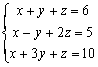

四階行列式
程式編寫日期: 2007年8月16日
程式可以計算一個 4×4 行列式的值。第二個程式除計算四階行列式的值外，還可以計算聯立三元一次方程(使用克萊瑪法則 (Cramer's rule))及方程式組行列式的值。
程式編寫日期: 2006年8月16日
程式需要在 SD 模式下執行，因此在選擇新程式位置後，按 4 選用SD模式。
注意: 藍色的英文字為統計模式中的變數(n 按 shift 1 3 ，Σx 按 shift 1 2)
第一個程式 (193 bytes)
ClrStat: ?→A: ?→B: ?→C: ?→D: ?→X: ?→Y: ?→M:
1 ; 2-1(AM - XC + AY - BX DT: -1 ; Σx - AY + BX DT:
A: ?→A: 0 ; Ans A - XD - n DT: BM - YC→X: BA - YD→Y:
CA - MD→M: ?→A: ?→B: ?→C: ?→D: AX + CΣx - BΣx2 ; 0 DT:
DX - CY + BM→X: Cn - AM - DΣx2→M: AY + DΣx - Bn→Y:
; 0 DT: ?→D: ?→A: ?→B: ?→C: AnsC - DX - AM - BY
第二個程式 (217 bytes)
ClrStat: ?→A: ?→B: ?→C: ?→D: ?→X: ?→Y: ?→M:
1 ; 2-1(AM - XC + AY - BX DT: -1 ; Σx - AY + BX DT:
A: ?→A: 0 ; Ans A - XD - n DT: BM - YC→X: BA - YD→Y:
CA - MD→M: ?→A: ?→B: ?→C: ?→D: AX + CΣx - BΣx2 ; 0 DT:
DX - CY + BM→X: Cn - AM - DΣx2→M: AY + DΣx - Bn→Y:
; 0 DT: Ans→D: X┘D→A: M┘D→B: Y┘D→C: D: ?→D:
?→A: ?→B: ?→C: AnsC - DX - AM - BY
例題1: 計算以下行列式的值。
按 Prog 1 再按 1 EXE 1 EXE 1 EXE 6 EXE 1 EXE -1 EXE 2 EXE 5 EXE
1 EXE 3 EXE 1 EXE 10 EXE 4 EXE 3 EXE 2 EXE 1 EXE (顯示答案為30)
例題2: 解聯立方程 :

(只限第二個程式)
按 Prog 1 再按 1 EXE 1 EXE 1 EXE 6 EXE 1 EXE -1 EXE 2 EXE 5 EXE 1 EXE 3 EXE 1 EXE 10 EXE
(顯示方程組行列式為 -2) EXE (顯示x=1) EXE (顯示y=2) EXE (顯示z=3)
計算完結後按 AC或 EXE終止程式
註1: 按 RCL A、RCL B、RCL C及RCL D顯示三根及方程組行列式的值。
返回 CASIO fx-50FH、fx-3650P II、fx-50FH II及fx-50F PLUS 程式集